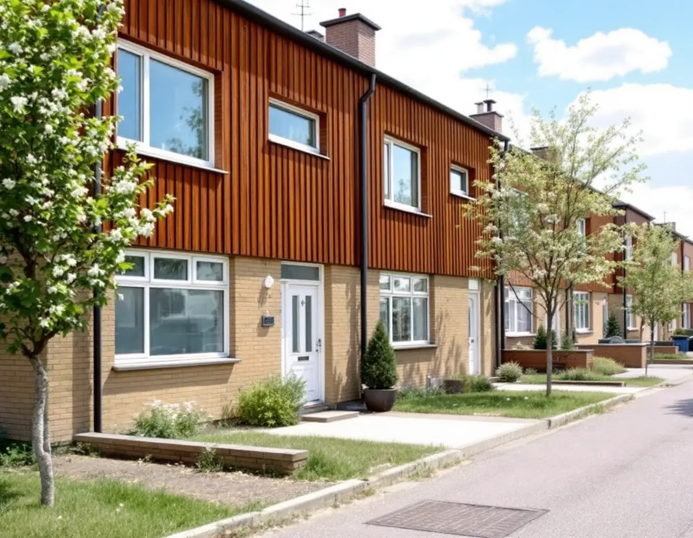
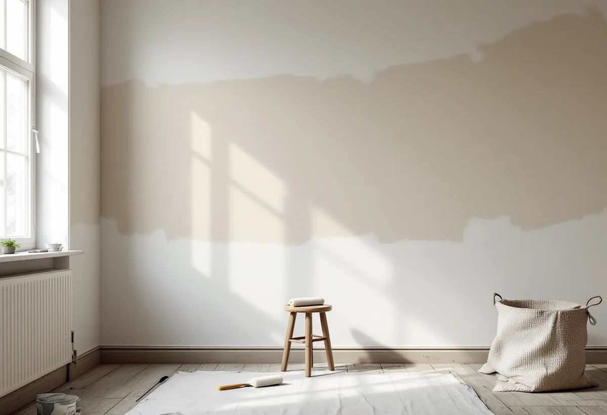

Byggår och ytor
Vi går igenom vad som ska målas och vilka material som kan behöva provas.
Kista byggdes på bara några år i slutet av 1970-talet, och lägenheterna och radhusen kan nu ha hunnit få flera lager färg. Geal Entreprenad AB målar väggar, tak, snickerier och fasader i Kista och tar hänsyn till det som kan sitta i ett hus från den tiden innan något slipas.

Stadsmuseets text om Kista i serien Stockholms spår berättar att staden köpte marken på det gamla militära övningsfältet Järvafältet 1966, och att Kista byggdes ut under åren 1975–1980. Staden tillämpade här betydligt friare arkitektoniska former än i de andra stadsdelarna på Järvafältet och ville samla arbetsplatser, bostäder, service och kollektivtrafik. Tunnelbanestationen invigdes 1975 och Kista centrum 1977.
Enligt stadens områdesfakta för 2025 finns 5 318 bostäder i flerbostadshus i Kista, varav 3 565 bostadsrätter, och 971 småhus, där 404 är bostadsrätter och 482 äganderätter. Det gör stor skillnad för målningen. Enligt bostadsrättslagen 7 kap. 4 § ska föreningen hålla huset i gott skick i den mån ansvaret inte ligger på medlemmen, medan ägaren av ett radhus med äganderätt själv svarar för hela huset. För den som hyr är målningen hyresvärdens fråga.

Boverket skriver att det är sannolikt att det finns asbest någonstans i en byggnad som är uppförd mellan 1940 och 1980, och att asbest även kan ha kommit in med produkter vid senare renoveringar. Bland exemplen på var den kan finnas nämner Boverket färger, puts, väggskivor, fogmassor, tätmassor och kakelfix. Användningen förbjöds i byggsektorn först 1982, och husen i Kista byggdes alltså innan förbudet.
Så länge asbesten är bunden är den ingen fara. Men när materialet slipas, skrapas eller borras kan fibrer frigöras, och de kan sväva i inomhusluften i många timmar. Det enda säkra sättet att veta är enligt Boverket att ta prover och låta analysera dem. Ska en vägg, en fog eller ett gammalt färglager slipas ner låter vi därför ta ett prov först, och visar det asbest är det ett företag med tillstånd från Arbetsmiljöverket som får sanera.
När Kista byggdes hade latexfärgen funnits i över tjugo år. Statens fastighetsverk beskriver hur den första latexfärgen kom 1951, hur de tidiga bindemedlen snart ersattes av akrylat och polyvinylacetat, och hur rullen var allmänt accepterad en bit in på 1960-talet. Latex torkar genom att vattnet avdunstar, känns torr efter några timmar och är övermålningsbar, men det tar flera veckor innan torkprocessen är helt avslutad.
Syns skarvarna mellan väggskivorna igenom färgen behöver de lagas innan väggen målas. Riksantikvarieämbetet beskriver hur skarvarna i ett skivsystem ska täckas med remsor som klistras med vävklister och spacklas minst två gånger. Spacklet är samtidigt en svag länk som inte tål stötar lika bra, så vi spacklar inte mer än nödvändigt. Mer om väggar och garderober finns under snickare i Kista och om köket under köksrenovering i Kista.
För ett småhus ger Skatteverket rotavdrag för att måla fasader, fönster, väggar, tak och element, och för att montera och ta ner byggnadsställningar i samband med rotarbete. Det gäller den som äger huset. För ett radhus som är en bostadsrätt ser listan annorlunda ut: där ger arbete inne i bostaden avdrag, men inte att måla fasaden, balkongen eller utsidan av fönster och ytterdörrar, och inte arbete på gemensamma ytor.
I en radhusförening är fasaden därför i regel en fråga för föreningen och dess stadgar, medan varje ägare av ett radhus med äganderätt planerar själv. I båda fallen tittar vi på vad som sitter på fasaden innan den tvättas eller skrapas. Boverket nämner fasadskivor och fönsterkitt bland de material som kan innehålla asbest, och högtryckstvätt räknas till de bearbetningar som kan frigöra fibrer. Mer om tillbyggnader och altaner finns under byggföretag i Kista och målning i stort under målare.
Vi går igenom vad som ska målas och vilka material som kan behöva provas.
Ska något slipas eller skrapas tas ett asbestprov innan arbetet börjar.
Fasad och inomhus redovisas var för sig, med det som ger ROT för just din upplåtelseform.
Skarvar och skador lagas och spacklas i tunna lager.
Grundning där det behövs och två strykningar på väggar och tak.
Vi går igenom resultatet med dig och lämnar uppgift om färg och kulör.
Om rotavdraget gäller inomhus eller också på fasaden beror på om du äger ett radhus, har en bostadsrätt eller hyr. I en bostadsrätt ger målning inne i bostaden avdrag. Med äganderätt till radhuset gäller avdraget även fasad och ställning. En hyrd lägenhet ger inget avdrag.
Skatteverket ger 30 procent av arbetskostnaden i avdrag, högst 50 000 kr per person och år och högst 75 000 kr för rot och rut sammantaget. Material och resor ger inget avdrag. Vi drar avdraget direkt på fakturan.
Ytornas storlek, hur mycket som behöver spacklas, om något måste provas för asbest innan det slipas och, för radhuset, fasadens höjd och behov av ställning påverkar priset mest. Efter ett kostnadsfritt besök får du ett skriftligt kostnadsförslag.
Fasad, fönster och invändig målning.
Målare i Stockholm →Takbyte, takbesiktning och plåtarbeten.
Takläggare i Kista →Låga tak, tätskikt och takbrunnar från 1970-talet.
Takrenovering i Kista →Gårdshus vid radhus och villor.
Attefallshus i Kista →Radhusen, föreningen och ventilationen.
Badrumsrenovering i Kista →Uterum, altan och föreningens tillstånd.
Byggföretag i Kista →Radhus, atriumhus och husgruppen.
Fasadmålning i Kista →Panel, skivor och isolering på radhus.
Fasadrenovering i Kista →Radhus och villor från 1970-talet.
Fönsterbyte i Kista →1970-talets radhusfönster.
Fönsterrenovering i Kista →Nya golv på betong i radhus och lägenheter.
Golvläggare i Kista →Golvslipning i bostadsrätt, hyresrätt och radhus.
Golvslipning i Kista →Småhus i förening och kök från 1970-talet.
Köksrenovering i Kista →Rännor, stuprör och beslag.
Plåtslagare i Kista →Garderober, väggar och dörrar i lägenheten.
Snickare i Kista →Platta tak och pulpettak.
Takbyte i Kista →Lägenheter och radhus från 1970-talet.
Tapetsering i Kista →Tillbyggnad vid radhus och villor.
Tillbyggnad i Kista →Renovera hela huset eller lägenheten.
Totalrenovering i Kista →